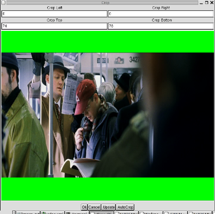
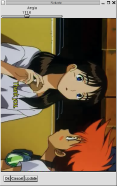
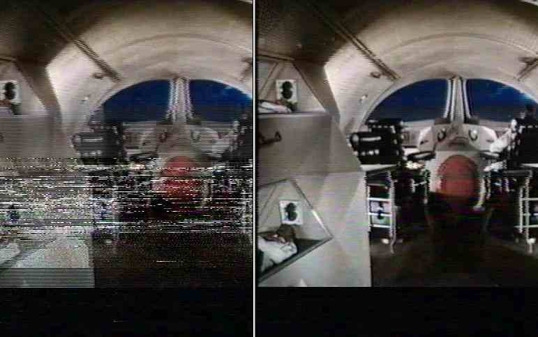
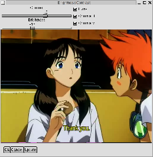
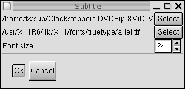

Видео
1.Режим Process/Copy
Режим Copy
В этом режиме avidemux копирует входной видео поток на выход
без изменений.
Есть исключение : при экспорте в *VCD, видео устанавливается в
режим process.
|
Warning: Не используйте режим copy для
mpeg1/2 видео, всегда устанавливайте режим process!
|
Режим
Process
Avidemux сначала распакует видео на YV12 фреймы, применит
указанные фильтры, затем закодирует снова выбранным видео кодеком.
2.Мета-фильтры Мета-фильтр это группа
фильтров или фильтр, модифицирующий другие фильтры. Вот некоторые из
них :
- VCD/SVCD/DVD res: эти мета-фильтры автоматически изменят
разрешение видео до совместимого с VCD/DVD/SVC. Внутри они
используют "add black borders" и "resize".
- Partial: этот мета-фильтр устанавливает действие других
фильтров только на части видео. Например, вам понадобилось
применить "deinterlace" только на части видео. Для этого
подключите фильтр "deinterlace", выберите его и нажмие кнопку
Partial . Введите начальный и конечный
фреймы.
3.Фильтры для работы с изображением
Crop (обрезание
краев)
Этот фильтр обрезает размер кадра (например для удаления черных
бордюров). Значения left/right/top/bottom должны быть четными.
Вы можете посмотреть предварительные результаты обрезания
используя кнопку update .
На качественном материале (dvd), можно попробовать кнопку Autopcrop. 
Resize
Этот фильтр предназначен для изменения размеров кадра. Алгоритм
позаимствован из avisynth . Доступны два метода (эквиваленты
bilinear/bicubic).
Blacken
Borders
Фильтр заменяет существующие бордюры в видео на чисто-черные.
Используется для замены зашумленных полос на чистые (например в
оцифрованом с VHS ролике)
Add Black
Borders
Этот фильтр *добавляет* черные бордюры (предыдущий заменял).
Используется при подготовке *VCD для изменения размера кадра без
изменения значения соотношения сторон (aspect ratio).
Flip
vertical
Rotate
Фильтр авторства "Tracy"
Поворачивает изображение на 90/180/270 градусов. Автор
использует его для обработки видео с камеры, работающей в
портретном режиме.

4.Interlacing related filters
Deinterlace
Это порт фильтра от Donaldа Graftа - "smart-deinterlace filter
to YV12"
Обнаруживает чересстрочные кадры и производит сглаживание.
Фильтр имеет два параметра :
- Detection threshold (порог обнаружения) : при больших
значениях легче обнаруживается чересстрочность, но слишком
большие значения приведут к размыванию картинки!
- Blur threshold (порог размывания): когда чересстрочность
будет обнаружена, части изображения, параметры чересстрочности
которого превысят этот порог, будут сглажены. Значение должно
быть меньше, чем у предыдущего порога
Pal Shift
Этот фильтр берет первое поле из одного кадра и второе из
следующего.
Некоторые фильмы (и некоторые DVD) имеют чересстрочное
изображение такого типа.
Этот фильтр не делает никаких проверок, поэтому прежде чем
применять его, убедитесь в корректности его работы с помощью
"preview".
Pal Smart
Этот фильтр что-то среднее между двумя предыдущими.
Он сравнивает текущую картинку и после применения "Pal-shift" ,
выбирает вариант с меньшим искажением и применяет "smart
deinterlace". Т.к. цвет в этом процессе не учавствует, цветовые
искажения минимальны.
Работает медленно, но очень эффективно на качественном видео.
Может быть использован также как простой способ для IVTC
(Inverse Telecine), т.к. реконструирует прогрессивность кадров, но
не удаляет кадры для преобразования 30fps в 24.
Drop
Фильтр написал Ron Reithoffer.
Если строки в соседних кадрах сильно отличаются (выпадающие
строки в VHS) они заменяются усредненными значениями, вычисленными
на основе строк из предыдущих и последующих кадров.
Автор утверждает, что этот фильтр должен быть первым в цепочке
фильтров, но не очень хорошо работает с чересстрочным материалом.

5.Convolution Kernel based filters
Convolution
Эти фильтры замещают каждый пиксель его усредненным значением,
вычисленным на матрице 3x3 (исключая "Large median", который
использует матрицу 5x5 ).
Они могут работать с яркостью и/или цветностью.
Median и Mean используют только цветность и очень показательны
на материалах с большим уровнем цветового шума (записанного с VCR
или TV).
6.Luma/Chroma filters
Swap u / v
Contrast
Этот фильтр линейно изменяет контрастность/яркость для
яркостного и/или цветовых каналов.
Поможет "выровнять" слишком яркое/темное/синее/красное видео.

Luma/chroma only
7.Smoother filters
Stabilize
Фильтр замещает каждый пиксел, перешедший условия порога
усредненным по времени и в пространстве относительно окружения.
Denoise
Фильтр портирован из transcode (DNR filter)
Порог для яркости/контрастности выставляется раздельно.
FluxSmooth
Фильт портирован из avisynth, оригинал написал Ross Thomas
.
Детали можно узнать из документации на avisynth
Temporal Cleaner
Оригинальный фильтр написал Jim Casaburi для virtual dub .
После Vlad59 портировал его для avisynth .
Подробности в документации на virtual dub/avisynth
8.Misc
Subtitle
Фильтр добавляет субтитры текстового формата srt/sub из файла
Вы можете выбрать шрифт и размер.

|